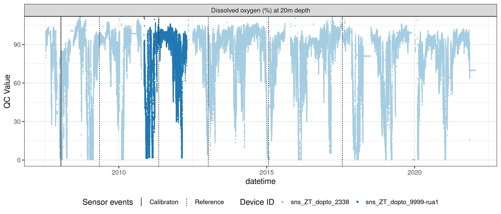
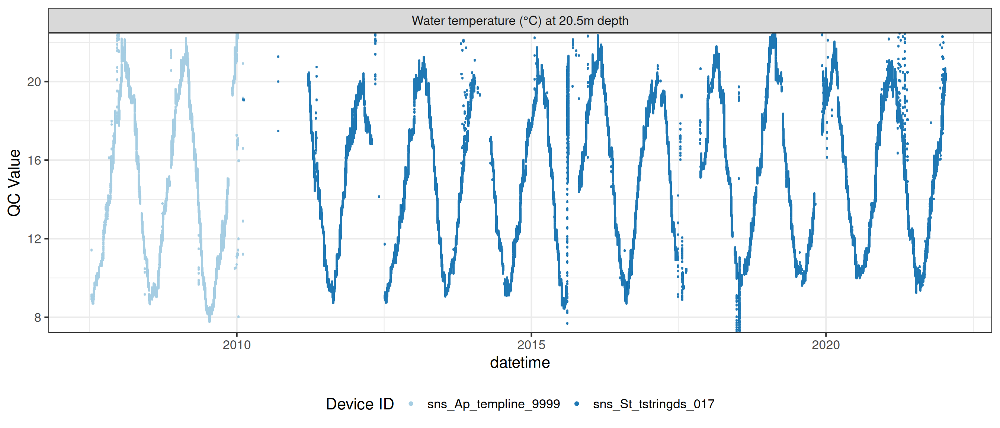
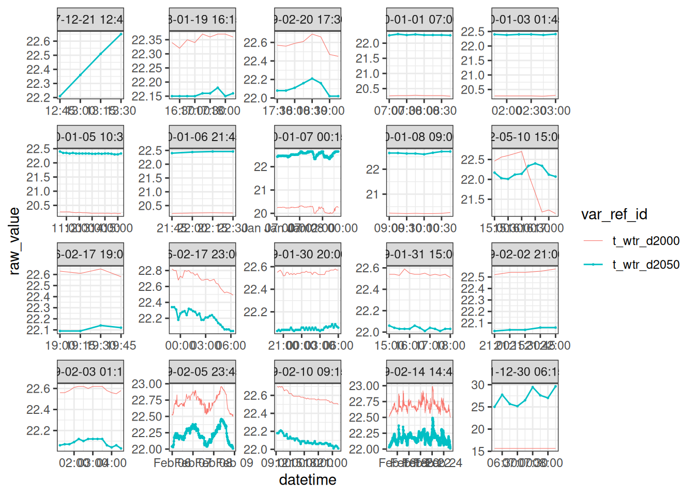
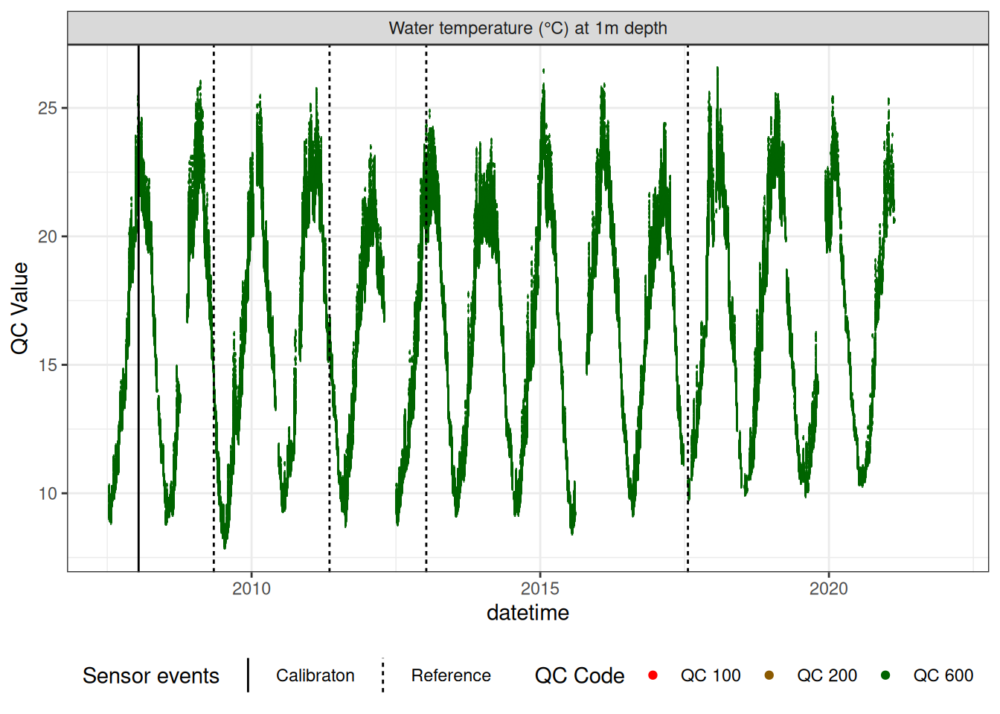
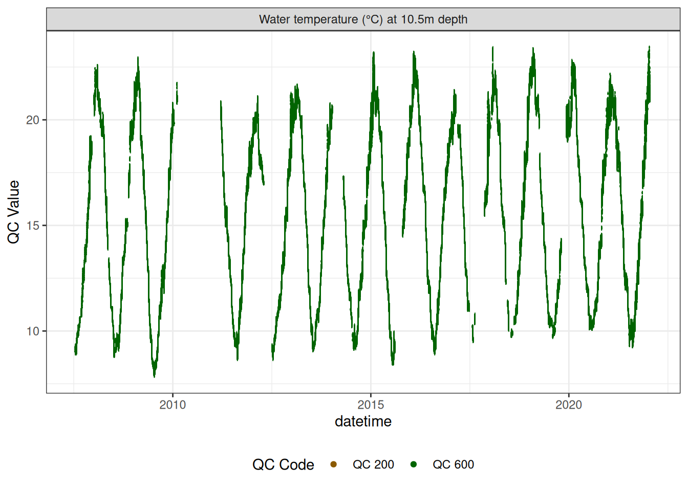

download <- TRUE
if (download) {
dir.create("data-raw", showWarnings = FALSE)
# Hydrotel data
piggyback::pb_download(
file = "rotorua_data_raw.zip",
dest = ".",
repo = "limnotrack/f_rotorua",
tag = "v0.0.1", overwrite = TRUE
)
# Unzip the file to tempdir
tmp_dir <- tempdir()
unzip("rotorua_data_raw.zip", exdir = tmp_dir)
# Move files into data-raw
file.copy(list.files(file.path(tmp_dir, "rotorua_data_raw"), full.names = TRUE),
"data-raw", overwrite = TRUE)
# Delete zip file
unlink("rotorua_data_raw.zip", force = TRUE)
}
# Read in raw data
dat <- read_csv("data-raw/rotorua_sftp_compiled_raw.csv") |>
mutate(datetime = as_datetime(Date)) |>
select(-Date) |>
arrange(datetime)Rotorua QC
Load data
The raw data was downloaded from the Bay of Plenty hydroTel SFTP server. The data were then collated into a CSV file which can be downloaded from GitHub or within R using the piggyback package. The data are stored in the data-raw folder.
Load metadata
Load metadata about the site, site events, devices, and variables. This includes the site location, device IDs, variable names, and sensor calibration data.
site_sel <- "f_Rotorua"
site <- read_csv("data-raw/sites.csv", col_types = cols())
site_events <- read_csv("data-raw/site_events.csv", col_types = cols())
site_devices <- read_csv("data-raw/site_devices.csv", col_types = cols())
device_var <- read_csv("data-raw/device_variable.csv", col_types = cols())
device_position <- read_csv("data-raw/device_position.csv", col_types = cols())
sensor_reference <- read_csv("data-raw/sensor_reference.csv", col_types = cols())
sensor_calibrations <- read_csv("data-raw/sensor_calibrations.csv", col_types = cols())
sensor_scaling <- read_csv("data-raw/sensor_scaling.csv", col_types = cols())
variable_ref <- read_csv("data-raw/variables.csv", col_types = cols())
qc_filters <- read_csv("data-raw/qc_filters.csv", col_types = cols())
qc_update_df <- read_csv("data-raw/qc_update_table.csv", col_types = cols())
sensor_map <- map_sensors(site_devices = site_devices,
device_var = device_var,
device_position = device_position)
sensor_map# A tibble: 65 × 8
site device_id date_from date_to var_abbr reference
<chr> <chr> <dttm> <dttm> <chr> <chr>
1 f_Rotor… wip_ZT_h… 2010-02-05 18:15:00 2022-01-18 04:00:00 <NA> <NA>
2 f_Rotor… sns_ZT_d… 2007-07-13 12:00:00 2015-08-21 12:00:00 c_do d
3 f_Rotor… sns_IS_r… 2015-10-23 10:00:00 2022-01-18 04:00:00 c_do d
4 f_Rotor… sns_ZT_d… 2007-07-13 12:00:00 2010-11-09 12:15:00 c_do d
5 f_Rotor… sns_ZT_d… 2010-11-09 12:15:00 2012-04-29 06:09:00 c_do d
6 f_Rotor… sns_ZT_d… 2012-04-29 06:09:00 2022-01-22 13:54:00 c_do d
7 f_Rotor… sns_ZT_d… 2007-07-13 12:00:00 2015-08-21 12:00:00 c_do_sat d
8 f_Rotor… sns_IS_r… 2015-10-23 10:00:00 2022-01-18 04:00:00 c_do_sat d
9 f_Rotor… sns_ZT_d… 2007-07-13 12:00:00 2010-11-09 12:15:00 c_do_sat d
10 f_Rotor… sns_ZT_d… 2010-11-09 12:15:00 2012-04-29 06:09:00 c_do_sat d
# ℹ 55 more rows
# ℹ 2 more variables: z_relative <dbl>, var_ref_id <chr>1 Site location
Lake Rotorua is located in the Bay of Plenty region of New Zealand. The monitoring site is located near the centre of the lake around its deepest point.
2 Compile raw hydroTel data from BoP
Check no variables are time-aggregated
2.1 Standardise to 15-minute data (i.e. modify any periods where data were logged every 5-minutes.
- Circular average for wind direction, sum for rainfall, mean for everything else.
rain <- dat |>
select(datetime, contains("rainfall")) |>
standardise(15, FUN = sum, na.rm = TRUE)
wind_dir <- dat |>
select(datetime, contains("wind_direction")) |>
standardise(15, FUN = avg_circ)
mean_vars <- c("datetime",
"do_cont_0.5m", "do_cont_20m", "do_sat_0.5m",
"do_sat_20m", "do_temp_0.5m", "do_temp_20m",
# "light_level_1", "light_level_2",
"ph_decommissioned", "ph_raw",
"temp_0.5m", "temp_2.5m", "temp_4.5m",
"temp_6.5m", "temp_8.5m", "temp_10.5m", "temp_12.5m",
"temp_14.5m", "temp_16.5m", "temp_18.5m", "temp_20.5m",
# "temphion_3",
"phyco",
# "trios_chl_a",
"chlorophyll",
"air_temp", "humidity", "barometric_pressure",
"wind_speed_m-s", "wind_speed")
means <- dat |>
select(contains(mean_vars)) |>
standardise(15, FUN = mean, na.rm = TRUE)
date_df <- data.frame(datetime = seq.POSIXt(round_date(min(dat$datetime), "15 mins"),
round_date(max(dat$datetime), "15 mins"),
by = 15*60))
dat2 <- list(date_df, means, rain, wind_dir) |>
# left_join(means, by = "datetime") |>
purrr::reduce(function(x, y) {left_join(x, y, by = "datetime")}) |>
arrange(datetime)2.2 Check and correct any variable name misalignments
(e.g., temperature depths incorrectly assigned , Temperature & DO swapped (e.g., Rotorua around 2016)
DO at 0.5m
plotly_data(dat2, y1 = "do_cont_20m", y2 = "do_temp_20m", sub = 50)Swap DO & temperature back into their correct columns.
swap_start <- "2021-03-23 19:00:00"
swap_end <- "2022-02-02 15:00:00"
dat2 <- swap_cols(dat2, var1 = "do_cont_20m", var2 = "do_temp_20m",
date_range = c(swap_start, swap_end))plotly_data(dat2, y1 = "do_cont_20m", y2 = "do_temp_20m",
date_range = c(swap_start, swap_end), buffer = 240, sub = 20)ggplot() +
geom_scattermore(data = dat2, aes(x = datetime, y = chlorophyll, colour = "chl1")) +
geom_scattermore(data = dat2, aes(x = datetime, y = trios_chl_a, colour = "chl2")) +
coord_cartesian(ylim = c(0, 500)) +
theme_bw()Sensors were all 0.5-1m, we will call them 1m.
Map column names to standard names used in the database.
col_mapping <- c(
# "battery_voltage",
"f_chl_d100" = "chlorophyll",
# "f_chl_d110" = "trios_chl_a",
"f_phyc_d100" = "phyco",
"c_do_d100" = "do_cont_0.5m",
"c_do_d2000" = "do_cont_20m",
"c_do_sat_d100" = "do_sat_0.5m",
"c_do_sat_d2000" = "do_sat_20m",
"t_wtr_d50" = "temp_0.5m",
"t_wtr_d100" = "do_temp_0.5m",
"t_wtr_d250" = "temp_2.5m",
"t_wtr_d450" = "temp_4.5m",
"t_wtr_d650" = "temp_6.5m",
"t_wtr_d850" = "temp_8.5m",
"t_wtr_d1050" = "temp_10.5m",
"t_wtr_d1250" = "temp_12.5m",
"t_wtr_d1450" = "temp_14.5m",
"t_wtr_d1650" = "temp_16.5m",
"t_wtr_d1850" = "temp_18.5m",
"t_wtr_d2000" = "do_temp_20m",
"t_wtr_d2050" = "temp_20.5m",
"c_ph_d100" = "ph_decommissioned",
"c_ph_raw_d100" = "ph_raw",
"t_air_h150" = "air_temp",
"pr_baro_h150" = "barometric_pressure",
"pp_rain_h150" = "rainfall",
"h_rh_h150" = "humidity",
"r_swd_h150" = "solar_radiation",
"w_spd_h150" = "wind_speed_m-s",
"w_dir_h150" = "wind_direction")
dat3 <- standardise_columns(dat2, col_mapping)Write level one raw data to file.
write_csv(dat3, "data-raw/rotorua_sftp_compiled_raw_level1.csv")3 Sensor Attribution
Map each sensor onto each data point.
Convert wide dataframe to standardised long format.
raw_long <- raw |>
pivot_longer(cols = -datetime, names_to = "var_ref_id", values_to = "raw_value")
# Conditional join raw_long with sensor_map using var_ref_id and when datetime is between date_from and date_to
raw_long_device <- sensor_map |>
# slice(1:3) |>
group_by(device_id) |>
left_join(raw_long, by = "var_ref_id") |>
filter(datetime >= date_from & datetime <= date_to) |>
ungroup() |>
arrange(device_id, datetime) |>
mutate(qc_value = round(raw_value, 2),
qc_flag = "",
qc_code = case_when(
is.na(raw_value) ~ "QC 100",
TRUE ~ "QC 200"
)) |>
select(site, datetime, device_id, var_abbr, var_ref_id, raw_value, qc_value,
qc_flag, qc_code) |>
distinct(datetime, var_ref_id, .keep_all = TRUE)
head(raw_long_device)# A tibble: 6 × 9
site datetime device_id var_abbr var_ref_id raw_value qc_value
<chr> <dttm> <chr> <chr> <chr> <dbl> <dbl>
1 f_Rotorua 2007-07-13 14:45:00 sns_Ap_t… t_wtr t_wtr_d10… 10.6 10.6
2 f_Rotorua 2007-07-13 14:45:00 sns_Ap_t… t_wtr t_wtr_d12… 12.9 12.9
3 f_Rotorua 2007-07-13 14:45:00 sns_Ap_t… t_wtr t_wtr_d14… 11.2 11.2
4 f_Rotorua 2007-07-13 14:45:00 sns_Ap_t… t_wtr t_wtr_d16… 10.1 10.1
5 f_Rotorua 2007-07-13 14:45:00 sns_Ap_t… t_wtr t_wtr_d18… 10.7 10.7
6 f_Rotorua 2007-07-13 14:45:00 sns_Ap_t… t_wtr t_wtr_d20… 11.4 11.4
# ℹ 2 more variables: qc_flag <chr>, qc_code <chr>Sensor plots




3.1 Remove based on site events
raw_long_device <- raw_long_device |>
remove_site_events(site_events = site_events, sensor_map = sensor_map) # A tibble: 39 × 5
site device_id var_ref qc_flag
<chr> <chr> <chr> <chr>
1 f_Rotorua all all buoy_out
2 f_Rotorua all all buoy_out
3 f_Rotorua all all buoy_out
4 f_Rotorua all all buoy_out
5 f_Rotorua all all buoy_out
6 f_Rotorua all all buoy_out
7 f_Rotorua all all buoy_out
8 f_Rotorua all all buoy_out
9 f_Rotorua all all buoy_out
10 f_Rotorua all all buoy_out
11 f_Rotorua all all buoy_out
12 f_Rotorua all all buoy_out
13 f_Rotorua all all battery_failure
14 f_Rotorua all all battery_failure
15 f_Rotorua all all battery_failure
16 f_Rotorua all all battery_failure
17 f_Rotorua all all battery_failure
18 f_Rotorua sns_Sp_chlor_2779 f_chl sensor_fault
19 f_Rotorua sns_Sp_chlor_2779 f_chl sensor_fault
20 f_Rotorua sns_Sp_chlor_2779 f_chl sensor_fault
21 f_Rotorua sns_Sp_chlor_9999-rua f_chl sensor_fault
22 f_Rotorua sns_Sp_chlor_2779 f_chl sensor_fault
23 f_Rotorua sns_Sp_chlor_2779 f_chl sensor_fault
24 f_Rotorua sns_Sp_chlor_2779 f_chl sensor_fault
25 f_Rotorua sns_Sp_chlor_2779 f_chl sensor_fault
26 f_Rotorua sns_TD_c7c_2103928 f_chl sensor_fault
27 f_Rotorua sns_TD_c7c_2103928 f_chl sensor_fault
28 f_Rotorua sns_Vs_wxt510_9999-rua2 w_spd sensor_fault
29 f_Rotorua sns_Vs_wxt510_9999-rua2 w_dir sensor_fault
30 f_Rotorua sns_ZT_dopto_2338 c_do_d2000 sensor_fault
31 f_Rotorua sns_ZT_dopto_2338 c_do_d2000 sensor_fault
32 f_Rotorua sns_ZT_dopto_2338 c_do_sat_d2000 sensor_fault
33 f_Rotorua sns_ZT_dopto_2338 c_do_sat_d2000 sensor_fault
34 f_Rotorua sns_Tr_microp_1035 f_phyc sensor_fault
35 f_Rotorua sns_Tr_microp_1035 f_phyc sensor_fault
36 f_Rotorua sns_TD_c7p_2103927 f_phyc sensor_fault
37 f_Rotorua sns_ZT_dopto_2378 c_do_d100 sensor_fault
38 f_Rotorua sns_ZT_dopto_2378 c_do_sat_d100 sensor_fault
39 f_Rotorua sns_St_tstringds_017 t_wtr_d1850 sensor_fault
# ℹ 1 more variable: date_interval <Interval>raw_long_device |>
filter(qc_flag == "sensor_fault") # A tibble: 94,640 × 9
site datetime device_id var_abbr var_ref_id raw_value qc_value
<chr> <dttm> <chr> <chr> <chr> <dbl> <dbl>
1 f_Rotor… 2013-07-18 17:00:00 sns_ZT_d… c_do c_do_d100 11.4 NA
2 f_Rotor… 2013-07-18 17:15:00 sns_ZT_d… c_do c_do_d100 11.4 NA
3 f_Rotor… 2013-07-18 17:30:00 sns_ZT_d… c_do c_do_d100 11.4 NA
4 f_Rotor… 2013-07-18 17:45:00 sns_ZT_d… c_do c_do_d100 11.4 NA
5 f_Rotor… 2013-07-18 18:00:00 sns_ZT_d… c_do c_do_d100 11.4 NA
6 f_Rotor… 2013-07-18 18:15:00 sns_ZT_d… c_do c_do_d100 11.4 NA
7 f_Rotor… 2013-07-18 18:30:00 sns_ZT_d… c_do c_do_d100 11.3 NA
8 f_Rotor… 2013-07-18 18:45:00 sns_ZT_d… c_do c_do_d100 11.3 NA
9 f_Rotor… 2013-07-18 19:00:00 sns_ZT_d… c_do c_do_d100 11.3 NA
10 f_Rotor… 2013-07-18 19:15:00 sns_ZT_d… c_do c_do_d100 11.2 NA
# ℹ 94,630 more rows
# ℹ 2 more variables: qc_flag <chr>, qc_code <chr># plot_qc_data(data = raw_long_device_filt)4 Meteorology
4.1 Relative humidity drift
Over the entire period, the relative humidity sensor appears to have drifted in the middle of the time period.
raw_long_device |>
filter(var_ref_id == "h_rh_h150") |>
summary() site datetime device_id
Length:499268 Min. :2007-07-13 14:45:00 Length:499268
Class :character 1st Qu.:2011-05-15 15:26:15 Class :character
Mode :character Median :2014-12-05 19:37:30 Mode :character
Mean :2014-11-17 02:43:05
3rd Qu.:2018-06-27 23:48:45
Max. :2022-01-18 04:00:00
var_abbr var_ref_id raw_value qc_value
Length:499268 Length:499268 Min. : 0.0 Min. : 0.0
Class :character Class :character 1st Qu.: 63.0 1st Qu.: 63.0
Mode :character Mode :character Median : 75.0 Median : 75.0
Mean : 65.7 Mean : 65.7
3rd Qu.: 83.0 3rd Qu.: 83.0
Max. :100.0 Max. :100.0
NA's :36489 NA's :38250
qc_flag qc_code
Length:499268 Length:499268
Class :character Class :character
Mode :character Mode :character
plot_sensor(data = raw_long_device, var_ref_id = "h_rh_h150",
variable_ref = variable_ref,
sensor_calibrations = sensor_calibrations,
sensor_reference = sensor_reference,
sensor_scaling = sensor_scaling) +
geom_hline(yintercept = 100, linetype = "dashed", colour = "red") +
coord_cartesian(ylim = c(0, 100)) 5 Quality control
We used a set of quality control codes to assess the quality of the data. The codes are from the National Environmental Monitoring Standards (NEMS). The codes are as follows:
qc_codes <- c("Missing Record" = "QC 100",
"No Quality or Non Verified" = "QC 200",
"Synthetic" = "QC 300",
"Poor Quality" = "QC 400",
"Fair Quality" = "QC 500",
"Good Quality" = "QC 600")
qc_code_col_scale = c(
"QC 100" = "#FF0000",
"QC 200" = "#8B5A00",
"QC 300" = "#D3D3D3",
"QC 400" = "#FFA500",
"QC 500" = "#00BFFF",
"QC 600" = "#006400"
)
qc_df <- data.frame(
qc_code = qc_codes,
qc_zone = names(qc_codes),
qc_code_col = unname(qc_code_col_scale),
stringsAsFactors = FALSE
)
qc_df |>
datatable(rownames = FALSE,
options = list(
pageLength = 6,
dom = "t",
columnDefs = list(list(className = 'dt-center', targets = "_all"))
)
) |>
formatStyle(
'qc_code_col',
target = 'row',
backgroundColor = styleEqual(qc_code_col_scale, qc_code_col_scale)
)6 pH standardisation
To standardise the pH data, we apply a sensor scaling based on reference pH measurements of 4, 7, and 10. The pH sensor is a ISFET sensor, which is a type of pH sensor that uses a field-effect transistor (FET) to measure the pH of a solution.
We use the raw pH signal which is a value between 0 and 1000. The pH sensor is then mapped onto the reference points and corrected for drift.
Drift corrected pH values
ph_raw <- raw_long_device |>
filter(var_abbr %in% c("c_ph_raw")) |>
mutate(new_val = qc_value) |>
select(datetime, new_val)
ph_dc <- ph_count |>
filter(var_abbr %in% c("c_ph")) |>
left_join(ph_raw, by = "datetime") |>
mutate(
qc_value = case_when(
is.na(qc_value) ~ new_val, .default = qc_value
)
)
date_range <- raw_long_device |>
filter(var_abbr %in% c("c_ph", "c_ph_raw")) |>
pull(datetime) |>
range()
# ph_dc <- ph #ph_count |>
# filter(!is.na(qc_value) & !duplicated(datetime)) |>
# mutate(var_ref_id = "c_ph_d100", var_abbr = "c_ph")
any(duplicated(ph_dc$datetime))[1] FALSEdata <- ph_dc
ph_dc <- ph_dc |>
adjust_linear_drift(var_ref_id = "c_ph_d100", sensor_refs = sensor_refs,
date_range = date_range, expand_coeffs = TRUE) |>
apply_adjustment(var_ref_id = "c_ph_d100",
# date_range = c("2013-07-19", "2017-07-13"),
FUN = \(x) ifelse(x <= 5 | x >= 10, NA, x)) |>
mutate(
qc_code = case_when(
is.na(raw_value) ~ "QC 100",
is.na(qc_value) ~ "QC 200",
.default = qc_code
)
)
summary(ph_dc) datetime var_ref_id site
Min. :2014-02-20 12:00:00 Length:136033 Length:136033
1st Qu.:2015-02-09 18:00:00 Class :character Class :character
Median :2016-01-30 00:00:00 Mode :character Mode :character
Mean :2016-01-30 00:00:00
3rd Qu.:2017-01-18 06:00:00
Max. :2018-01-07 12:00:00
device_id var_abbr raw_value qc_value
Length:136033 Length:136033 Min. :-0.970 Min. :5.013
Class :character Class :character 1st Qu.: 6.690 1st Qu.:6.520
Mode :character Mode :character Median : 7.160 Median :6.847
Mean : 7.338 Mean :6.932
3rd Qu.: 7.790 3rd Qu.:7.225
Max. :14.070 Max. :9.980
NA's :12393 NA's :18829
qc_flag qc_code
Length:136033 Length:136033
Class :character Class :character
Mode :character Mode :character
# viz_data(data = ph_dc, var_abbr = "var_ref_id",
# site_events = site_events)
# plotly_data(ph_dc, y1 = "c_ph_d100", sub = 20)
ph_orig <- raw_long_device |>
filter(var_abbr %in% c( "c_ph")) |>
mutate(
raw_value = case_when(
# datetime > as_datetime("2019-04-01") &
# var_ref_id == "c_phraw_d100" ~ NA,
datetime > as_datetime("2017-07-13") &
var_ref_id == "c_ph_d100" ~ NA,
.default = raw_value
)
) |>
filter(!is.na(raw_value))
# plotly_data(data = ph_dc, y1 = "drift_correct", sub = 20)
ggplot() +
geom_point(data = ph_orig, aes(datetime, raw_value, colour = "Original"),
size = 0.2) +
geom_point(data = ph_dc, aes(datetime, qc_value,
colour = "Drift corrected"), size = 0.2) +
coord_cartesian(ylim = c(5, 11)) +
theme_bw()
6.1 Basic QC - filters
- Filter extreme outliers (order of magnitude plus)
- Filter repetitions/stuck values (careful genuine repeats e.g., rainfall == 0)
- Remove data for any periods where buoy was clearly out of the water (see notes or visual check of data)
raw_long_device_filt <- apply_filters(raw_long_device2, filters = qc_filters)plot_flag_ts(raw_long_device_filt)7 Fluorescence sensors
fluor_df <- raw_long_device_filt |>
filter(var_abbr %in% c("f_chl", "f_phyc")) |>
apply_adjustment("f_chl_d100",
FUN = \(x) ifelse(x <= 0, NA, x)) |>
apply_adjustment("f_chl_d100",
FUN = \(x) ifelse(x >= 1000, NA, x))
# viz_data(data = fluor_df, var_abbr = "var_ref_id",
# site_events = site_events,
# raw_value = "qc_value")
fluor_sensors <- sensor_map |>
filter(device_id %in% fluor_df$device_id) |>
select(device_id, var_ref_id, date_from, date_to)
sensor_refs <- sensor_reference |>
left_join(fluor_sensors, by = "device_id") |>
filter(device_id %in% fluor_sensors$device_id,
!is.na(value_actual)
# date > "2013-06-28",
# value_actual %in% c(4, 7, 10),
# units_sensor == "counts"
)
sensor_scales <- sensor_scaling |>
arrange(date) |>
filter(device_id %in% fluor_sensors$device_id)
plot_sensor(data = fluor_df, var_ref_id = c("f_chl_d100"),#, "f_phyc_d100"),
variable_ref = variable_ref,
sensor_calibrations = sensor_calibrations,
sensor_reference = sensor_reference,
sensor_scaling = sensor_scaling, clip_ylim = F) Correct fluorescence data by removing bad data and applying corrections to get the chlorophyll at it its raw 0-5V raw signal, then recorrecting to get the corrected chlorophyll value inrelative fluorescene units (RFU).
raw_chl <- fluor_df |>
filter(var_ref_id == "f_chl_d100")
# viz_data(data = raw_chl, site_events = site_events, variable = "var_ref_id",
# value = "qc_value")
sensor_scales <- sensor_scaling |>
filter(device_id %in% raw_chl$device_id) |>
select(device_id, date, offset, multiplier, range)
raw_v <- raw_chl |>
mutate(var_ref_id = "f_chl_raw_v_d100",
var_abbr = "f_chl_raw_v",
# raw_value = NA_real_
) |>
left_join(sensor_scales, by = c("device_id", "datetime" = "date")) |>
tidyr::fill(offset, multiplier, .direction = "down") |>
mutate(qc_value = (qc_value - offset) / multiplier,
qc_code = case_when(
is.na(raw_value) ~ "QC 100",
is.na(qc_value) ~ "QC 200",
.default = "QC 500"
)
) |>
# apply_adjustment("f_chl_raw_v_d100",
# date_range = c("2009-12-02 10:53:01", "2010-01-15 11:51:31"),
# FUN = \(x) x / 10
# ) |>
apply_adjustment("f_chl_raw_v_d100",
date_range = c("2013-04-10 11:59:16", "2014-08-28 04:09:46"),
FUN = \(x) x / 5
) |>
apply_adjustment("f_chl_raw_v_d100",
date_range = c("2015-01-30 14:02:14", "2016-01-23 10:57:48"),
FUN = \(x) x / 10
) |>
apply_adjustment("f_chl_raw_v_d100",
date_range = c("2019-01-29 09:34:58", "2019-08-01 15:16:35"),
FUN = \(x) x / 10
) |>
apply_adjustment("f_chl_raw_v_d100",
date_range = c("2019-08-01 15:11:20", "2022-01-18 08:54:32"),
FUN = \(x) x * 3
) #|>
# # brief period where it was 20-fold higher, NYE issue across HydroTel??
# apply_adjustment("f_chl_raw_v_d100",
# date_range = c("2007-12-31 23:59:00", "2008-01-04 10:25"),
# FUN = \(x) x / 20
# ) |>
# # looks like changed to lower range on this date\
# # still seapoint sensor, values approx x3 so guess was changed from 0-50 to 0-15
# apply_adjustment("f_chl_raw_v_d100",
# date_range = c("2013-04-10 16:14", "2015-12-24 08:24"),
# FUN = \(x) x * 15 / 50
# ) |>
# # values higher... /10?
# apply_adjustment("f_chl_raw_v_d100",
# date_range = c("2015-12-24 08:24", "2016-01-20 11:53"),
# FUN = \(x) x / 10
# ) |>
# # later period where it was also 10-fold higher for some reason?
# apply_adjustment("f_chl_raw_v_d100",
# date_range = c("2019-01-29 09:00", "2019-08-01 15:13"),
# FUN = \(x) x / 10
# ) |>
# # seapoint sensor was always logged at 10x proper range, but applying an
# # approx correction to match to Turner sensor values..
# apply_adjustment("f_chl_raw_v_d100",
# date_range = c("2007-07-13 14:45", "2016-02-05 05:14"),
# FUN = \(x) x / 10 * 3
# ) |>
# # first few years of Turner was logged with multiplier = 20, when should have been 10
# apply_adjustment("f_chl_raw_v_d100",
# date_range = c("2016-02-05 05:14", "2019-06-04 14:41"),
# FUN = \(x) x / 2
# ) #|>
# update_qc_code_vectorized(qc_update_df = qc_update_df)
# chl_adj <- viz_data(data = raw_v, site_events = site_events, variable = "var_ref_id",
# value = "qc_value")
#
# write_csv(chl_adj, "qc_adj_f_chl_d100_raw_V.csv")
# plot_raw_qc(data = raw_v, variable_ref = variable_ref)
# chl_adj <- read_csv("qc_adj_f_chl_d100_raw_V.csv", col_types = cols())
# qc_update_df <- bind_rows(qc_update_df, chl_adj)
# write_csv(qc_update_df, "qc_update_df.csv")
chla_corr <- raw_v |>
update_qc_code_vectorized(qc_update_df = qc_update_df) |>
mutate(qc_value = qc_value * 10,
var_ref_id = "f_chl_d100",
var_abbr = "f_chl",
)
chla_corr |>
plot_sensor(var_ref_id = "f_chl_d100", variable_ref = variable_ref,
sensor_calibrations = sensor_calibrations,
sensor_reference = sensor_reference,
sensor_scaling = sensor_scaling, clip_ylim = FALSE,
colour = "qc_code")7.1 Load in field measurements
Compare field measurements to sensor data.
field <- read_csv("data-raw/rotorua_field_data.csv") |>
mutate(Date2 = as.Date(Date))
chla <- field |>
filter(grepl("Chla", Parameter)) |>
select(Date2, LocationName, DepthFrom, Sample_Depth, Value) |>
rename(Date = Date2)
ref_times <- raw_long_device_filt |>
mutate(hour = hour(datetime)) |>
filter(var_abbr %in% c("f_chl")) |>
filter(hour %in% c(0:6, 21:23)) |>
filter(as.Date(datetime) %in% as.Date(chla$Date))
sub_sensor <- raw_v |>
mutate(Date = as.Date(datetime)) |>
filter(datetime %in% ref_times$datetime) |>
group_by(Date, device_id) |>
summarise(qc_value = mean(qc_value, na.rm = TRUE),
median = median(qc_value, na.rm = TRUE), .groups = "drop")
df <- sub_sensor |>
left_join(chla, by = c("Date" = "Date")) |>
mutate(year = year(Date)) |>
filter(!is.na(qc_value))
ggplot() +
geom_point(data = df, aes(qc_value, Value, colour = LocationName)) +
geom_smooth(data = df, aes(qc_value, Value, colour = LocationName), method = "lm") +
# facet_wrap(year~device_id, scales = "free") +
labs(x = "Sensor value (Volts)",
y = "Field value (ug/L)") +
coord_cartesian(ylim = c(0, 50)) +
theme_bw() +
theme(legend.position = "bottom")
ggplot() +
geom_point(data = df, aes(qc_value, Value, colour = device_id)) +
geom_smooth(data = df, aes(qc_value, Value, colour = device_id), method = "lm") +
facet_wrap(~device_id, scales = "free") +
labs(x = "Sensor value (Volts)",
y = "Field value (ug/L)") +
# coord_cartesian(ylim = c(0, 50)) +
theme_bw() +
theme(legend.position = "bottom") 7.2 Phycocyanin data
Repeat similar procedure to phycocyanin data.
phyc_corr <- fluor_df |>
filter(var_ref_id == "f_phyc_d100",
duplicated(datetime))
# viz_data(data = phyc_corr, qc_update_df = qc_update_df,
# site_events = site_events, variable = "var_ref_id",
# value = "qc_value")
sensor_scales <- sensor_scaling |>
filter(device_id %in% phyc_corr$device_id) |>
arrange(date) |>
select(device_id, date, offset, multiplier, range)
phyc_corr <- phyc_corr |>
left_join(sensor_scales, by = c("device_id", "datetime" = "date")) |>
tidyr::fill(offset, multiplier, .direction = "down") |>
mutate(qc_value = (qc_value - offset) / multiplier,
var_ref_id = "f_phyc_raw_v_d100",
var_abbr = "f_phyc_raw_v"
) |>
drift_correction(var_ref_id = "f_phyc_raw_v_d100",
date_range = c("2013-02-21 12:04:53", "2013-06-26 23:55:06"),
low = c(0, 0, 0), high = c(0.2, 0.2, 0.39)) phyc_corr <- phyc_corr |>
mutate(qc_value = qc_value, # * 10,
var_ref_id = "f_phyc_d100",
var_abbr = "f_phyc"
)
phyc_corr |>
plot_sensor(var_ref_id = "f_phyc_d100", variable_ref = variable_ref,
sensor_calibrations = sensor_calibrations,
sensor_reference = sensor_reference,
sensor_scaling = sensor_scaling,
clip_ylim = FALSE, colour = "qc_code")8 Oxygen sensors
Remove bad data and correct for linear drift
do_1m <- raw_long_device_filt |>
filter(var_ref_id %in% c("c_do_sat_d100"))
plot_raw_qc(data = do_1m, variable_ref = variable_ref, ylim = c(80, 150))# do_1m |>
# viz_data(qc_update_df = qc_update_df, site_events = site_events,
# variable = "var_ref_id", value = "qc_value")do_1m |>
# plotly_data(y1 = "c_do_sat_d100", sub = 20)
plot_sensor(var_ref_id = c("c_do_sat_d100"), variable_ref = variable_ref,
sensor_calibrations = sensor_calibrations,
sensor_reference = sensor_reference,
sensor_scaling = sensor_scaling, clip_ylim = FALSE,
colour = "qc_code") do_20m <- raw_long_device_filt |>
filter(var_ref_id %in% c("c_do_sat_d2000")) |>
update_qc_code_vectorized(qc_update_df = qc_update_df)do_20m <- do_20m
do_20m |>
# plotly_data(y1 = "c_do_sat_d1000", sub = 20)
plot_sensor(var_ref_id = c("c_do_sat_d2000"), variable_ref = variable_ref,
sensor_calibrations = sensor_calibrations,
sensor_reference = sensor_reference,
sensor_scaling = sensor_scaling, clip_ylim = F, colour = "qc_code") +
geom_hline(yintercept = 0)9 Recalculate DO concentrations using temperature and DO saturation
temp_1m <- raw_long_device_filt |>
filter(var_ref_id == "t_wtr_d100") |>
select(datetime, raw_value) |>
rename(temp = raw_value)
pr_baro <- raw_long_device_filt |>
filter(var_ref_id == "pr_baro_h150") |>
select(datetime, raw_value) |>
rename(pr_baro = raw_value)
do_conc2_1m <- left_join(do_1m, temp_1m, by = "datetime") |>
left_join(pr_baro, by = "datetime") |>
mutate(do_sat_mgL = calc_DOsat_mg(temp, pr_baro),
var_abbr = "c_do",
var_ref_id = "c_do2_d100",
qc_value = qc_value / 100 * do_sat_mgL
) |>
select(datetime, var_ref_id, site, device_id, var_abbr, qc_value, qc_flag)
do_conc_1m <- raw_long_device_filt |>
filter(var_ref_id == "c_do_d100") |>
select(datetime, var_ref_id, site, device_id, var_abbr, raw_value)
do_conc2_1m <- do_conc2_1m |>
mutate(var_ref_id = "c_do_d100") |>
select(datetime, var_ref_id, site, device_id, var_abbr, qc_value,
qc_flag)
do_conc3_1m <- left_join(do_conc_1m, do_conc2_1m, by = c("datetime", "var_ref_id", "site", "device_id", "var_abbr")) |>
mutate(
qc_code = case_when(
!is.na(qc_value) ~ "QC 300",
is.na(raw_value) ~ "QC 100",
is.na(qc_value) ~ "QC 200"
)
)do_conc3_1m <- do_conc3_1m |>
update_qc_code_vectorized(qc_update_df = qc_update_df)
temp_20m <- raw_long_device_filt |>
filter(var_ref_id == "t_wtr_d2000") |>
select(datetime, raw_value) |>
rename(temp = raw_value)
pr_baro <- raw_long_device_filt |>
filter(var_ref_id == "pr_baro_h150") |>
select(datetime, raw_value) |>
rename(pr_baro = raw_value)
do_conc2_20m <- left_join(do_20m, temp_20m, by = "datetime") |>
left_join(pr_baro, by = "datetime") |>
mutate(do_sat_mgL = calc_DOsat_mg(temp, pr_baro),
var_abbr = "c_do",
var_ref_id = "c_do2_d100",
qc_value = qc_value / 100 * do_sat_mgL
) |>
select(datetime, var_ref_id, site, device_id, var_abbr, qc_value, qc_flag)
do_conc_20m <- raw_long_device_filt |>
filter(var_ref_id == "c_do_d2000") |>
select(datetime, var_ref_id, site, device_id, var_abbr, raw_value)
do_conc2_20m <- do_conc2_20m |>
mutate(var_ref_id = "c_do_d2000") |>
select(datetime, var_ref_id, site, device_id, var_abbr, qc_value,
qc_flag)
do_conc3_20m <- left_join(do_conc_20m, do_conc2_20m, by = c("datetime", "var_ref_id", "site", "device_id", "var_abbr")) |>
mutate(
qc_code = case_when(
!is.na(qc_value) ~ "QC 300",
is.na(raw_value) ~ "QC 100",
is.na(qc_value) ~ "QC 200"
)
)do_conc3_20m <- do_conc3_20m |>
update_qc_code_vectorized(qc_update_df = qc_update_df)
do <- bind_rows(do_conc3_1m, do_conc3_20m, do_1m, do_20m)
# qc_update_df <- viz_data(data = do, qc_update_df = qc_update_df,
# site_events = site_events, variable = "var_ref_id",
# value = "qc_value")9.1 Water temperature
wtemp <- raw_long_device_filt |>
filter(var_abbr %in% c("t_wtr")) |>
update_qc_code_vectorized(qc_update_df = qc_update_df)plot_raw_qc(data = wtemp, variable_ref = variable_ref, ylim = c(7, 30))# wtemp <- wtemp |>
# update_qc_code_vectorized(qc_update_df = qc_update_df)
wtemp |>
plot_sensor(var_ref_id = c("t_wtr_d50"), variable_ref = variable_ref,
sensor_calibrations = sensor_calibrations,
sensor_reference = sensor_reference,
sensor_scaling = sensor_scaling, clip_ylim = FALSE, colour = "qc_code")Water temperature high in the bottom waters
high_temp <- wtemp |>
filter(var_ref_id %in% c("t_wtr_d2050"), raw_value >= 22,raw_value <= 35) |>
mutate(over_22 = raw_value > 22,
tdiff = datetime - lag(datetime, default = first(datetime)),
group = data.table::rleid(tdiff)
) |>
group_by(var_ref_id, group) |>
mutate(n = n(), tstep = 1:n() * 15, date = datetime[1]) |>
filter(n > 1, max(tstep) >= 60) |>
ungroup() |>
filter(group %in% sample(unique(group), size = 20))
high_temp# A tibble: 1,669 × 15
datetime var_ref_id site device_id var_abbr raw_value qc_value
<dttm> <chr> <chr> <chr> <chr> <dbl> <dbl>
1 2007-12-21 12:45:00 t_wtr_d2050 f_Roto… sns_Ap_t… t_wtr 22.2 NA
2 2007-12-21 13:00:00 t_wtr_d2050 f_Roto… sns_Ap_t… t_wtr 22.4 NA
3 2007-12-21 13:15:00 t_wtr_d2050 f_Roto… sns_Ap_t… t_wtr 22.5 NA
4 2007-12-21 13:30:00 t_wtr_d2050 f_Roto… sns_Ap_t… t_wtr 22.6 NA
5 2008-01-19 16:15:00 t_wtr_d2050 f_Roto… sns_Ap_t… t_wtr 22.2 22.2
6 2008-01-19 16:30:00 t_wtr_d2050 f_Roto… sns_Ap_t… t_wtr 22.2 22.2
7 2008-01-19 16:45:00 t_wtr_d2050 f_Roto… sns_Ap_t… t_wtr 22.2 22.2
8 2008-01-19 17:00:00 t_wtr_d2050 f_Roto… sns_Ap_t… t_wtr 22.2 22.2
9 2008-01-19 17:15:00 t_wtr_d2050 f_Roto… sns_Ap_t… t_wtr 22.2 22.2
10 2008-01-19 17:30:00 t_wtr_d2050 f_Roto… sns_Ap_t… t_wtr 22.2 22.2
# ℹ 1,659 more rows
# ℹ 8 more variables: qc_flag <chr>, qc_code <chr>, over_22 <lgl>,
# tdiff <drtn>, group <int>, n <int>, tstep <dbl>, date <dttm>nxt_temp <- wtemp |>
filter(var_ref_id %in% c("t_wtr_d2000"), datetime %in% high_temp$datetime) |>
left_join(high_temp |>
select(datetime, group, date), by = c("datetime"))
ggplot() +
geom_point(data = high_temp, aes(datetime, raw_value, colour = var_ref_id), size = 0.2) +
geom_line(data = high_temp, aes(datetime, raw_value, colour = var_ref_id, group = var_ref_id)) +
geom_line(data = nxt_temp, aes(datetime, raw_value, colour = var_ref_id), size = 0.2) +
facet_wrap(~date, scales = "free") +
# coord_cartesian(xlim = c(0, 60 * 24), ylim = c(22, 30)) +
# labs(x = "Minutes") +
theme_bw()
Water temperature at 1m
# wtemp <- wtemp |>
# update_qc_code_vectorized(qc_update_df = qc_update_df,
# var_ref_id = "t_wtr_d100")
wtemp |>
plot_sensor(var_ref_id = c("t_wtr_d100"), variable_ref = variable_ref,
sensor_calibrations = sensor_calibrations,
sensor_reference = sensor_reference,
sensor_scaling = sensor_scaling, clip_ylim = FALSE, colour = "qc_code")

Water temperature at 2.5m
# wtemp <- wtemp |>
# update_qc_code_vectorized(qc_update_df = qc_update_df,
# var_ref_id = "t_wtr_d250")
wtemp |>
plot_sensor(var_ref_id = c("t_wtr_d250"), variable_ref = variable_ref,
sensor_calibrations = sensor_calibrations,
sensor_reference = sensor_reference,
sensor_scaling = sensor_scaling, clip_ylim = FALSE, colour = "qc_code")Water temperature at 4.5m
# wtemp <- wtemp |>
# update_qc_code_vectorized(qc_update_df = qc_update_df,
# var_ref_id = "t_wtr_d450")
wtemp |>
plot_sensor(var_ref_id = c("t_wtr_d450"), variable_ref = variable_ref,
sensor_calibrations = sensor_calibrations,
sensor_reference = sensor_reference,
sensor_scaling = sensor_scaling, clip_ylim = FALSE, colour = "qc_code")Water temperature at 6.5m
# wtemp <- wtemp |>
# update_qc_code_vectorized(qc_update_df = qc_update_df,
# var_ref_id = "t_wtr_d650")
wtemp |>
plot_sensor(var_ref_id = c("t_wtr_d650"), variable_ref = variable_ref,
sensor_calibrations = sensor_calibrations,
sensor_reference = sensor_reference,
sensor_scaling = sensor_scaling, clip_ylim = FALSE, colour = "qc_code")Water temperature at 8.5m
# wtemp <- wtemp |>
# update_qc_code_vectorized(qc_update_df = qc_update_df,
# var_ref_id = "t_wtr_d850")
wtemp |>
plot_sensor(var_ref_id = c("t_wtr_d850"), variable_ref = variable_ref,
sensor_calibrations = sensor_calibrations,
sensor_reference = sensor_reference,
sensor_scaling = sensor_scaling, clip_ylim = FALSE, colour = "qc_code")Water temperature at 10.5m
# wtemp <- wtemp |>
# update_qc_code_vectorized(qc_update_df = qc_update_df,
# var_ref_id = "t_wtr_d1050")
wtemp |>
plot_sensor(var_ref_id = c("t_wtr_d1050"), variable_ref = variable_ref,
sensor_calibrations = sensor_calibrations,
sensor_reference = sensor_reference,
sensor_scaling = sensor_scaling, clip_ylim = FALSE, colour = "qc_code")

Water temperature at 12.5m
# wtemp <- wtemp |>
# update_qc_code_vectorized(qc_update_df = qc_update_df,
# var_ref_id = "t_wtr_d1250")
wtemp |>
plot_sensor(var_ref_id = c("t_wtr_d1250"), variable_ref = variable_ref,
sensor_calibrations = sensor_calibrations,
sensor_reference = sensor_reference,
sensor_scaling = sensor_scaling, clip_ylim = FALSE, colour = "qc_code")Water temperature at 14.5m
# wtemp <- wtemp |>
# update_qc_code_vectorized(qc_update_df = qc_update_df,
# var_ref_id = "t_wtr_d1450")
wtemp |>
plot_sensor(var_ref_id = c("t_wtr_d1450"), variable_ref = variable_ref,
sensor_calibrations = sensor_calibrations,
sensor_reference = sensor_reference,
sensor_scaling = sensor_scaling, clip_ylim = FALSE,
colour = "qc_code")Water temperature at 16.5m
# wtemp <- wtemp |>
# update_qc_code_vectorized(qc_update_df = qc_update_df,
# var_ref_id = "t_wtr_d1650")
wtemp |>
plot_sensor(var_ref_id = c("t_wtr_d1650"), variable_ref = variable_ref,
sensor_calibrations = sensor_calibrations,
sensor_reference = sensor_reference,
sensor_scaling = sensor_scaling, clip_ylim = FALSE, colour = "qc_code")Water temperature at 18.5m
# wtemp <- wtemp |>
# update_qc_code_vectorized(qc_update_df = qc_update_df,
# var_ref_id = "t_wtr_d1850")
wtemp |>
plot_sensor(var_ref_id = c("t_wtr_d1850"), variable_ref = variable_ref,
sensor_calibrations = sensor_calibrations,
sensor_reference = sensor_reference,
sensor_scaling = sensor_scaling, clip_ylim = FALSE, colour = "qc_code")Water temperature at 20.0m
# wtemp <- wtemp |>
# update_qc_code_vectorized(qc_update_df = qc_update_df,
# var_ref_id = "t_wtr_d2000")
wtemp |>
plot_sensor(var_ref_id = c("t_wtr_d2000"), variable_ref = variable_ref,
sensor_calibrations = sensor_calibrations,
sensor_reference = sensor_reference,
sensor_scaling = sensor_scaling, clip_ylim = FALSE, colour = "qc_code")Water temperature at 20.5m
# wtemp <- wtemp |>
# update_qc_code_vectorized(qc_update_df = qc_update_df,
# var_ref_id = "t_wtr_d2050")
wtemp |>
plot_sensor(var_ref_id = c("t_wtr_d2050"), variable_ref = variable_ref,
sensor_calibrations = sensor_calibrations,
sensor_reference = sensor_reference,
sensor_scaling = sensor_scaling, clip_ylim = FALSE, colour = "qc_code")9.2 Check for offsets between temperature nodes
Generally the temperature data falls within the expected range, but there are some offsets between the sensors. The following plot shows the estimated temperatures for 10 and 25 degrees C, using calculated offsets based on when the temperature difference between the sensors are in 5% of the distribution.
The temperature from the DO sensors (1m and 10m) have a lower accuracy (0.5 C).
temp_strings <- wtemp |>
# Filter out oxygen depths
filter(!var_ref_id %in% c("t_wtr_d50", "t_wtr_d100", "t_wtr_d2000")) |>
pull(device_id) |>
unique()
temp_devices <- site_devices |>
filter(device_id %in% temp_strings)10 Assign QC codes for met variables
met <- raw_long_device_filt |>
filter(var_abbr %in% c("pp_rain", "pr_baro", "t_air", "h_rh",
"w_dir", "w_spd"))met <- met |>
update_qc_code_vectorized(qc_update_df = qc_update_df,
var_ref_id = c("pp_rain_h150", "pr_baro_h150",
"t_air_h150", "h_rh_h150",
"w_dir_h150", "w_spd_h150"))
met |>
plot_sensor(var_ref_id = c("pp_rain_h150", "pr_baro_h150", "t_air_h150",
"h_rh_h150", "w_dir_h150", "w_spd_h150"),
variable_ref = variable_ref,
sensor_calibrations = sensor_calibrations,
sensor_reference = sensor_reference,
sensor_scaling = sensor_scaling, clip_ylim = FALSE, colour = "qc_code")plot_raw_qc(data = met, variable_ref = variable_ref)11 Visual summaries
# heck for duplicate values
# dups1 <- data |>
# group_by(datetime, var_ref_id) |>
# summarise(n = n()) |>
# filter(n > 1)
# dups1Plot each variable
11.1 Temperature
plot_var_ts_qc(data = data, var_ref_id = c("t_wtr_d50", "t_wtr_d100",
"t_wtr_d250", "t_wtr_d450",
"t_wtr_d650", "t_wtr_d850",
"t_wtr_d1050", "t_wtr_d1250",
"t_wtr_d1450", "t_wtr_d1650",
"t_wtr_d1850", "t_wtr_d2000",
"t_wtr_d2050"))
11.2 Oxygen
plot_var_ts_qc(data = data, var_ref_id = c("c_do_sat_d100", "c_do_sat_d2000"))plot_var_ts_qc(data = data, var_ref_id = c("c_do_d100", "c_do_d2000"))11.3 Chlorophyll
plot_var_ts_qc(data = data, var_ref_id = c("f_chl_d100"))11.4 Phycocyanin
plot_var_ts_qc(data = data, var_ref_id = c("f_phyc_d100"))11.5 pH
plot_var_ts_qc(data = data, var_ref_id = c("c_ph_d100"))11.6 Meteorological variables

12 Download data
Download the data as a zip folder. The data is in wide format an comes with metadata files. The metadata files contain the information needed to reconstruct the quality control.